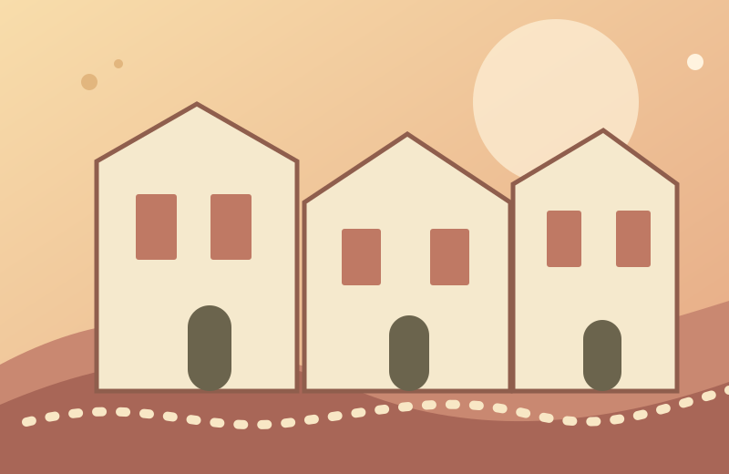
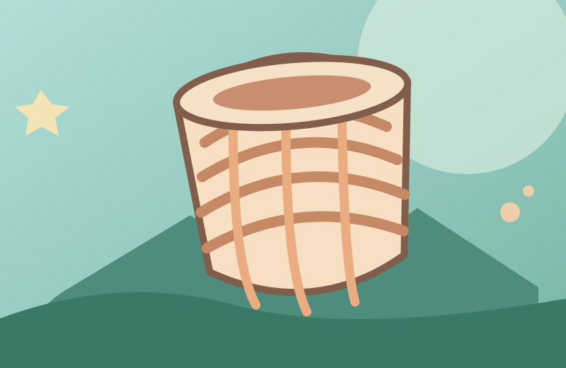
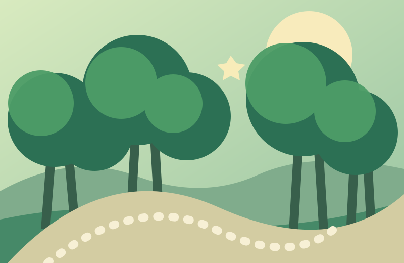
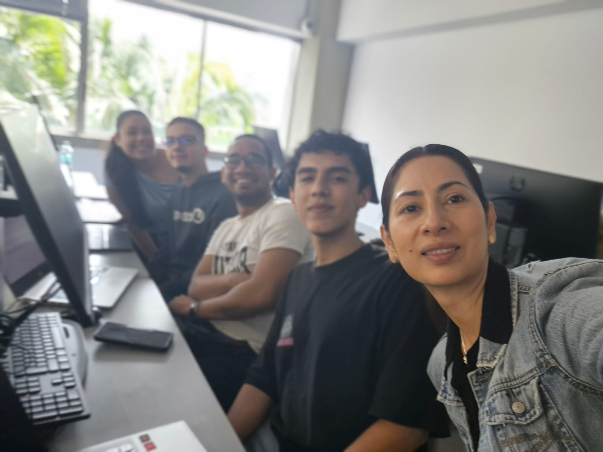

01 / 03HISTORIAS Y MEMORIA
Recorrido por las historias del barrio
Experiencia cultural de referencia. Consulta de información mediante el equipo de atención simulado.
RUTAS PARA MIRAR MÁS ALLÁ
Un recorrido por la cultura, la memoria y los espacios que nos conectan. Explora una forma distinta de mirar lo cotidiano.
NUESTRO CATÁLOGO
Experiencias inspiradas en los relatos, los saberes y los espacios que hacen especial a cada comunidad.

01 / 03HISTORIAS Y MEMORIA
Experiencia cultural de referencia. Consulta de información mediante el equipo de atención simulado.

02 / 03SABERES Y TRADICIONES
Actividad de referencia para conocer procesos artesanales.

03 / 03NATURALEZA URBANA
Nueva experiencia incluida en la versión 2.
EL PROYECTO
Ruta Local es un catálogo informativo creado para la hackatón EstudIA. Su propósito es mostrar cómo publicar, actualizar y recuperar contenido cultural en la nube de manera sencilla.
Conoce al equipoConoce las experiencias culturales que forman parte de esta demostración académica.
El contenido actualizado se consulta desde este mismo sitio web.
El equipo mantiene copias de respaldo para restaurar el catálogo ante errores.

EL EQUIPO DETRÁS DEL PROYECTOHECHO EN EQUIPO
Somos el equipo Los Últimos EstudIA. Desarrollamos este MVP para demostrar que una solución en la nube también puede ser sencilla, comprensible y fácil de mantener.
Un proyecto para aprender a publicar, colaborar y recuperar versiones con GitHub y GitHub Pages.